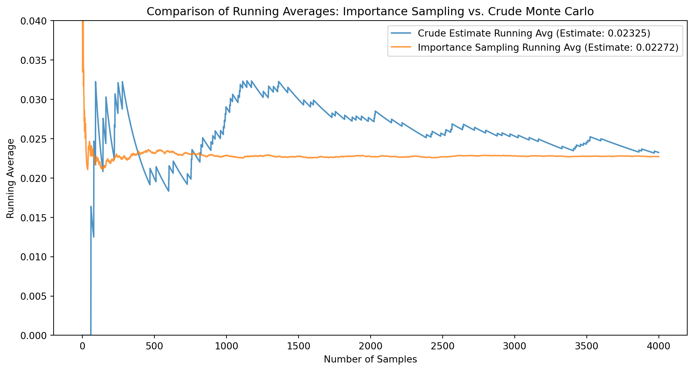
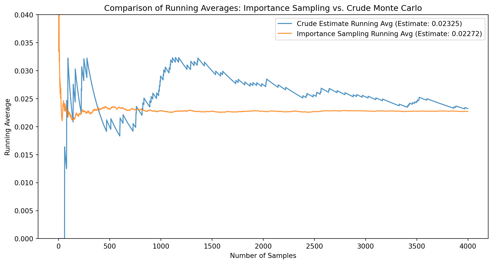
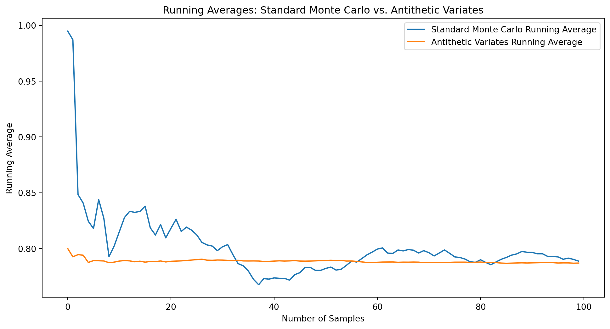

Variance of Importance Sampling Estimate: 0.00000
Relative Error of Importance Sampling Estimate: 0.01242
Variance of Crude Monte Carlo Estimate: 0.00001
Relative Error of Crude Monte Carlo Estimate: 0.10248In this notebook we will discuss two methods of variance reduction: importance sampling and antithetic variates. These methods are used to reduce the variance of an estimator, which can lead to more accurate and efficient estimates. We’ll start by reviewing the basic concepts of estimation theory.
We have seen two sampling methods that generate independent samples:
When using these methods, we get a good control over the uncertainty of the simulation results.
An estimator is a function of the data that is used to estimate an unknown parameter. The common situation is when \(\ell\) is the expectation of a function of a random variable \(X\), i.e., \(\ell = E[f(X)]\). A simple estimator of \(\ell\) is the sample mean, which is given by \[ \hat{\ell} = \frac{1}{N} \sum_{i=1}^{N} f(X_i), \tag{10.1}\]
where \(X_1, X_2, \ldots, X_N\) are independent and identically distributed (i.i.d.) samples from the distribution of \(X\). The sample mean \(\hat{\ell}\) is an unbiased estimator of \(\ell\), meaning that \(E[\hat{\ell}] = \ell\). By the central limit theorem, as \(N\) increases, the distribution of \(\hat{\ell}\) approaches a normal distribution with mean \(\ell\) and variance \(\sigma^2(\hat{\ell}) = \sigma^2(X)/N\), where \(\sigma^2(X)\) is the variance of \(f(X)\) and \(N\) is the number of samples. The confidence interval (CI) for \(\ell\) is given by \[ \left[ \hat{\ell} - z_{1-\alpha/2} \frac{S}{\sqrt{N}}, \hat{\ell} + z_{1-\alpha/2} \frac{S}{\sqrt{N}} \right], \]
where \(z_{1-\alpha/2}\) is the critical value from the standard normal distribution corresponding to a significance level of \(\alpha\), and \(S\) is the sample standard deviation of \(f(X)\). The width of the confidence interval is given by \[ \text{Width of CI} = 2z_{1-\alpha/2} \frac{S}{\sqrt{N}}. \]
It is common practice in simulation to use and report the relative widths of the confidence interval, defined as \[ \text{Relative Width} = \frac{\text{Width of CI}}{\hat{\ell}} = 2z_{1-\alpha/2} \frac{S}{\hat{\ell}\sqrt{N}}. \]
The relative width of the confidence interval is a measure of the precision of the estimate.
When the random variables \(X_i\) are not independent, the variance of the sum is given by
\[ \text{Var}(\hat{\ell}) = \frac{1}{N^2} \sum_{i=1}^{N} \text{Var}(f(X_i)) + \frac{2}{N^2} \sum_{i=1}^{N} \sum_{j=1, j \neq i}^{N} \text{Cov}(f(X_i), f(X_j)). \]
There are \(n^2\) terms in the covariance sum, and in general, we cannot guarantee that the covariance is small. So the above confidence interval is not valid. In the case of ergodic Markov chains, the central limit theorem for Markov chains allows us to estimate the CI as \[ \left[ \hat{\ell} - z_{1-\alpha/2} \frac{S_{eff}}{\sqrt{N_{eff}}}, \hat{\ell} + z_{1-\alpha/2} \frac{S_{eff}}{\sqrt{N_{eff}}} \right], \] where \(N_{eff}\) is the effective sample size. We will not discuss the details of effective sample size here.
Example: Estimating \(\pi\). In the first example we saw for estimating \(\pi\), we used the Monte Carlo method to estimate \(\pi\) by simulating random points in a square and counting the number of points that fall within a circle. The estimator we used was
\[ \hat{\ell} = \frac{4}{N} \sum_{i=1}^{N} I(X_i), \]
where \(I(X_i)\) is an indicator function that is 1 if the point \(X_i\) is inside the circle and 0 otherwise. The variance of this estimator is given by \[ \text{Var}(\hat{\ell}) = \frac{16}{N} \left( \frac{\pi}{4} \left( 1 - \frac{\pi}{4} \right) \right). \]
Note: Using the variable \(M\) inside the estimator was a mistake in the worksheet.
Example: Estimation of Rare-Event Probabilities. Consider estimation of the tail probability \(\ell = P(X > \gamma)\) of some random variable \(X\) for a large number \(\gamma\). We can use the following estimator: \[ \hat{\ell} = \frac{1}{N} \sum_{i=1}^{N} I_{> \gamma}(X_i), \] where \(I_{> \gamma}(X_i)\) is an indicator function that is 1 if \(X_i > \gamma\) and 0 otherwise. The variance of this estimator is given by
\[ \text{Var}(\hat{\ell}) = \frac{1}{N} \left( \ell (1 - \ell) \right). \] The relative width of the confidence interval is given by \[ \text{Relative Width} = \frac{2z_{1-\alpha/2} \sqrt{\ell (1 - \ell)}}{\hat{\ell} \sqrt{N}} \approx \frac{2z_{1-\alpha/2}}{\sqrt{N}} \sqrt{\frac{1 - \ell}{\ell}} \approx \frac{2z_{1-\alpha/2}}{\sqrt{N \ell}} \] When \(\ell\) is small, the relative width of the confidence interval is large. This means that we need a large number of samples to get a good estimate of \(\ell\).
Example: Magnetization in a 2D Ising Model. In a previous worksheet, we used Gibbs sampling and Metropolis–Hastings sampling to estimate the magnetization of a 2D Ising model. We used the simple estimator \[ \hat{M} = \frac{1}{N} \sum_{i=1}^{N} M(\sigma_i), \] where \(M(\sigma_i)\) is the magnetization of the \(i\)-th sample.
The samples \(\sigma_i\) are not independent, and so the variance of the estimator will be
\[ \text{Var}(\hat{M}) = \frac{1}{N^2} \sum_{i=1}^{N} \text{Var}(M(\sigma_i)) + \frac{2}{N^2} \sum_{i=1}^{N} \sum_{j=1, j \neq i}^{N} \text{Cov}(M(\sigma_i), M(\sigma_j)), \] which leads to much larger confidence intervals than we would expect from independent samples.
A very common application of Monte Carlo methods is to estimate integrals. The integral \[ \ell = \int_a^b f(x) dx \] of a function \(f(x)\) over the interval \([a, b]\) can be estimated using the estimator: \[ \hat{\ell} = \frac{b - a}{N} \sum_{i=1}^{N} f(X_i), \]
where \(X_i\) are i.i.d. samples from the uniform distribution on \([a, b]\). One can check that this is an unbiased estimator,
\[ \begin{aligned} E[\hat{\ell}] &= \frac{b - a}{N} \sum_{i=1}^{N} E[f(X_i)] \\ &= \frac{b - a}{N} \sum_{i=1}^{N} \int_a^b f(x) \frac{1}{b - a} dx \\ &= \frac{1}{N} \sum_{i=1}^{N} \ell \\ &= \ell. \end{aligned} \]
The variance of this estimator is given by \[ \text{Var}(\hat{\ell}) = \frac{(b - a)^2}{N^2} \sum_{i=1}^{N} \text{Var}(f(X_i)) = \frac{(b - a)^2}{N} \cdot \sigma^2(f(X)), \] where \(\sigma^2(f(X))\) is the variance of \(f(X)\), and \(N\) is the number of samples.
We will return to this example later when we discuss the method of antithetic and control random variables.
Importance sampling is a method to reduce the variance of an estimator by changing the distribution from which we sample. The idea is to reduce the number of low probability events that contribute to the variance of the estimator.
For example, when estimating the tail probability \(\ell = P(X > \gamma)\), if \(\ell\) is small, then most of the samples will be in the region \(X \leq \gamma\), which contributes little to the estimate. However, we cannot just sample from the tail of the distribution as this would provide us no information about the rest of the distribution. Importance sampling allows us to sample from tail but then “fix” the estimate by weighting the samples appropriately.
Definition: Importance Sampling. Let \(X\) be a random variable with probability density function (pdf) \(p(x)\), and let \(q(x)\) be a proposal pdf such that \(q(x) > 0\) for all \(x\) in the support of \(p(x)\). The importance sampling estimator of \(\ell = E[f(X)]\) is given by \[ \hat{\ell} = \frac{1}{N} \sum_{i=1}^{N} f(X_i) \frac{p(X_i)}{q(X_i)}, \] where \(X_1, X_2, \ldots, X_N\) are i.i.d. samples from the distribution with pdf \(q(x)\).
For clarity, we’ll denote the estimator in Equation 10.1 as \(\hat{\ell}_{crude}\) and the importance sampling estimator as \(\hat{\ell}_{IS}\).
Suppose \(N = 1\) so that the estimator is given by \[ \hat{\ell}_{IS} = f(X) \frac{p(X)}{q(X)}. \] Note that here \(X \sim q(x)\) and NOT \(p(x)\). We can check that this estimator is unbiased: \[ \begin{aligned} E_q[\hat{\ell}_{IS}] &= E_q\left[f(X) \frac{p(X)}{q(X)}\right] \\ &= \int f(x) \frac{p(x)}{q(x)} q(x) dx \\ &= \int f(x) p(x) dx \\ &= E[f(X)] \\ &= \ell. \end{aligned} \]
However, \[ \begin{aligned} \text{Var}(\hat{\ell}_{IS}) &\neq \text{Var}(\hat{\ell}_{crude}). \end{aligned} \]
This allows us to reduce the variance of the estimator by choosing \(q(x)\) appropriately.
Suppose \(f(X)\) is a non-negative function. Then if we choose
\[ q(x) \propto p(x) f(x), \]
then the importance sampling estimator for \(N = 1\)
\[ \hat{\ell}_{IS} = f(X) \frac{p(X)}{q(X)} \]
is a constant and has zero variance! When \(H\) is not non-negative, we can show that
\[ q(x) \propto p(x) |f(x)| \]
minimizes the variance of the estimator \(\hat{\ell}_{IS}\).
However, note that our goal is to estimate \(\ell = E[f(X)]\), which means that we do not know \(f(x)\) in advance. So we cannot choose this \(q(x)\) in advance. Even if we could, we might not be able to sample from \(q(x)\) easily. In practice, we choose \(q(x)\) to be a distribution that is easy to sample from and that is “close” to \(p(x)\) in some sense.
Example: Importance Sampling for Rare Events. Consider the problem of estimating the tail probability \(\ell = P(X > \gamma)\) for a random variable \(X\) with standard normal distribution. We can use importance sampling to estimate this probability by choosing a proposal distribution \(q(x)\) that is concentrated in the tail region. One such distribution is the exponential distribution with parameter \(\lambda\), which has pdf \[ q(x) = \lambda e^{-\lambda (x-2)}, \quad x \ge 2. \] The plots below show the running averages of the crude and importance sampling estimators for \(N = 2000\) samples. The importance sampling estimator is much more stable and converges to the true value of \(\ell\) much faster than the crude estimator.

Variance of Importance Sampling Estimate: 0.00000
Relative Error of Importance Sampling Estimate: 0.01242
Variance of Crude Monte Carlo Estimate: 0.00001
Relative Error of Crude Monte Carlo Estimate: 0.10248In this section, we will discuss two methods of variance reduction that are based on the idea of using correlated random variables: antithetic variables and control variates. Recall that the variance of a sum of two random variables is given by
\[ \text{var}(X + Y) = \text{var}(X) + \text{var}(Y) + 2\text{cov}(X, Y). \]
Oftentimes, having correlated random variables in undesirable as it reduces to an increase in variance and a decrease in the effective sample size. However, in some cases, we can use this correlation to our advantage.
Antithetic variates are pairs of random variables that are negatively correlated. If we can find an estimator that uses sums to two antithetic random variables, we can reduce its variance.
Consider the example of estimating the integral from Section 10.1.3. Suppose \(f(x)\) is a monotonic function over \([a, b]\). Then you’ll show on the homework that if \(X \sim U(a, b)\) then
\[ \text{cov}(f(X), f(a + b - X)) \le 0. \]
We can see intuitively why this is happening - if \(f(x)\) is increasing the \(f(b - x)\) is decreasing and vice versa, and hence the two are negatively correlated. In this case, we can reduce the variance of the crude estimator by instead using
\[ \hat{\ell}_{anti} = \dfrac{(b - a)}{N} \sum \limits_{i = 1}^{2N} \left(f(X) + f(a + b - X)\right) \]
Note that if \(X \sim U(a, b)\) then so is \(b - X\) and so \(\hat{\ell}_{anti}\) is an unbiased estimator.
Theorem 10.1 \(\text{var}(\hat{\ell}_{anti}) \le \text{var}(\hat{\ell}_{crude})\).
Example 10.1 Example: Antithetic Variates. Consider the problem of estimating the integral \(\ell = \int_0^1 (1 + x^2)^{-1} dx\) using antithetic variates. The plots below show the running averages of the crude and antithetic variate estimators for \(N = 100\) samples. The antithetic variate estimator achieves a \(50x\) reduction in variance compared to the crude estimator.

Standard Monte Carlo Estimate: 0.780106, Variance: 1.336727e-04
Antithetic Variates Estimate: 0.786903, Variance: 1.712442e-06
Variance Reduction Factor: 78.06xControl variates is a method for reducing variance in simulation estimates using strongly correlated random variables.
Let \(X\) be a random variable and suppose our goal is to estimate \(\mathbb{E}f(X)]\) for some function \(f\). Suppose \(h\) is another function that has the following properties:
Then we define the following
TODO: - [ ] Definition of control variates - [ ] Example of control variates - [ ] Compute variance of control variates estimator - [ ] Do the special case of probability estimation